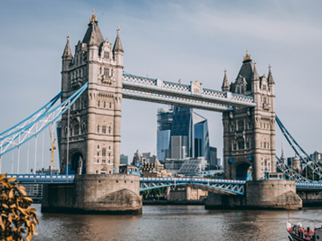

About
|  |
BlogFly into London with The Clash’s London Calling song playing through your earbuds, as you look out the plane’s window with the famous Tower Bridge in your sights. Just imagine – you are soon going to be on British soil, passing the London Tower, the famous entrance of the Savoy, Buckingham Palace and the Elizabeth Tower, holding the currently silent Big Ben bell. The welcoming and friendliness of Londoners’ hospitality will make your visit memorable. You’ll never want to leave. As James Boswell wrote, “when a man is tired of London, he is tired of life.” The luxury of this kingdom is shown through the city’s high end hotels. The doorman are ready to greet you in their full suit with overcoat and shiny, always polished shoes. Perfection is key. Hotels continue the elegance as you step into their lobbies. Details showed from the marble floors to the carefully chosen wallpaper covered in intricate designs. Artwork carefully selected with figures of royalty’s past. But still, no two luxury hotels are the same. London FireworksBe daring with old British dishes at the local pubs. Try fried sardines or blood sausage. Go classic with the variety of fish and chips or a meat pie. Go luxurious at the Savoy’s Kaspar Grill with a simple, yet melt in your mouth Dover Sole. If you are looking for something sweet, you can’t go wrong with a Hummingbird Bakery cupcakes. Shops are now located throughout London and their menu changes daily. Try the Biscoff cupcake, the ginger cookie mixed is throughout the cupcake and sprinkled on top. ‘Foggy old London town’, comes to life on many special occasions. On the second Saturday in June, London celebrates the Queen’s official birthday with a parade. The streets are lined with the British flags as the queen rides in a carriage or SUV. The sidewalks are filled with thousands of people trying to get their glimpse of Her Majesty The Queen. Another great time to visit is over New Years Eve by watching the firework show displayed over the London Eye, as popular music is proudly played. But no matter when you go, London will give you a warm welcome! |